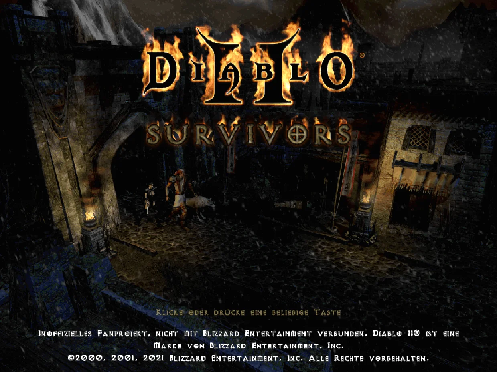
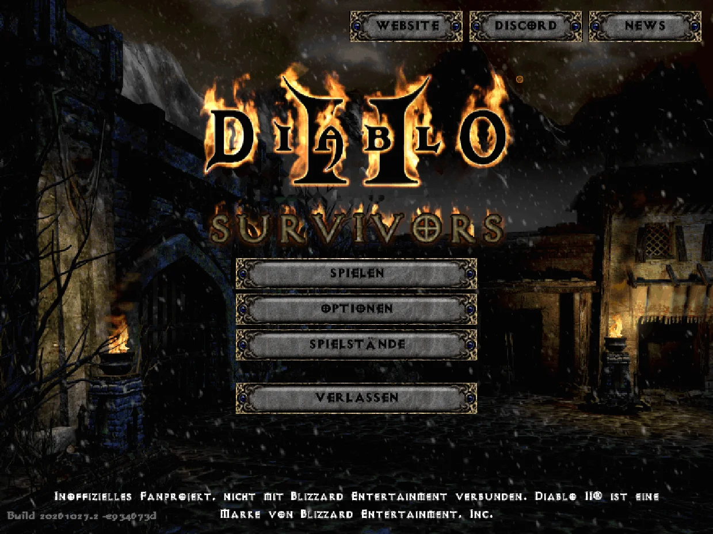
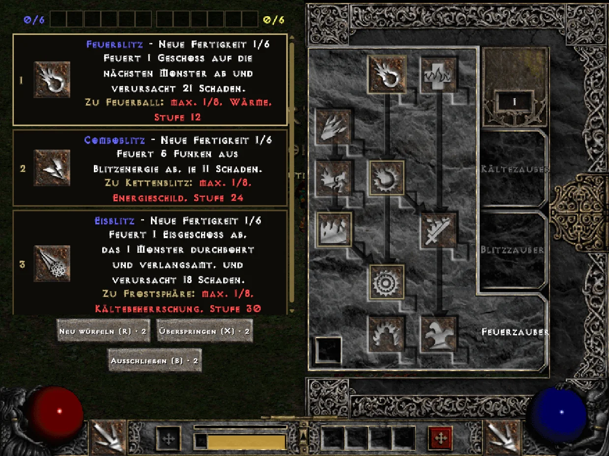
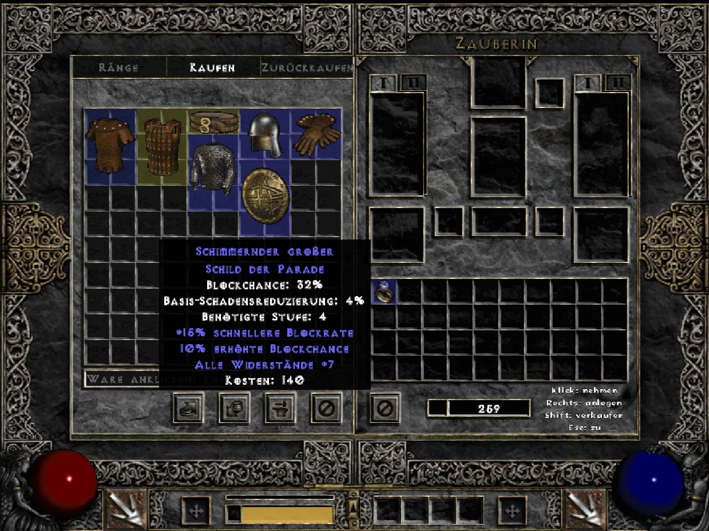
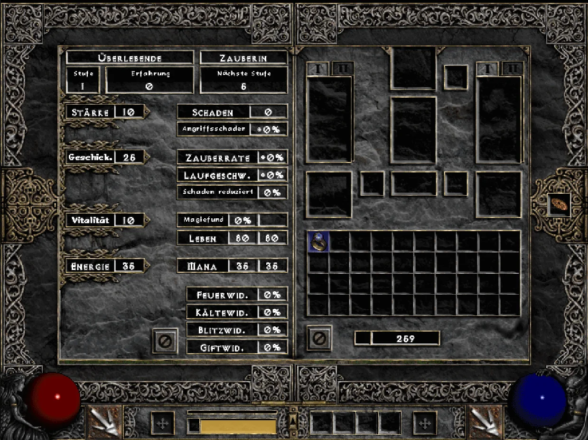
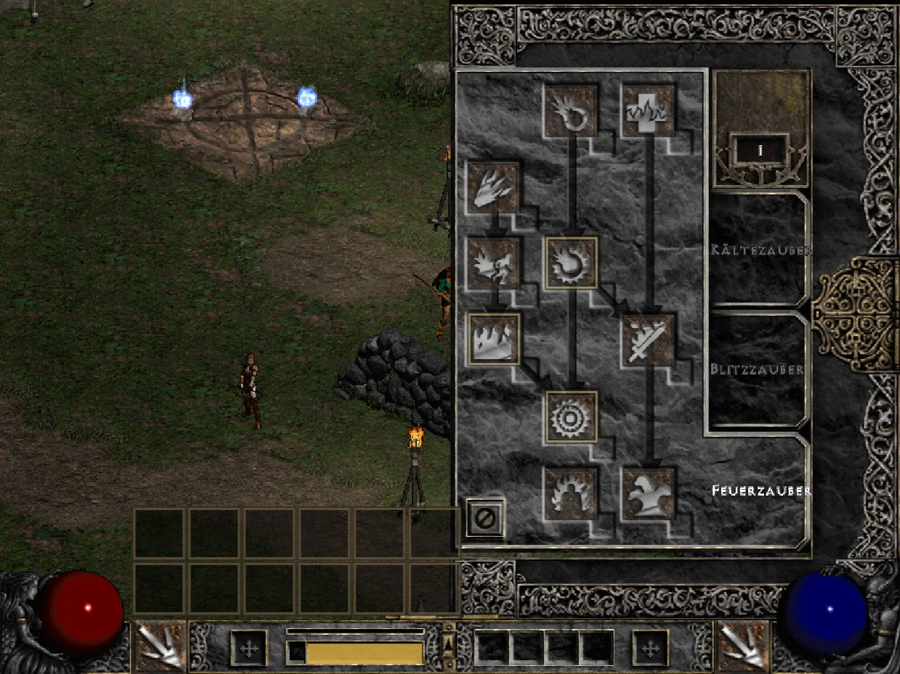
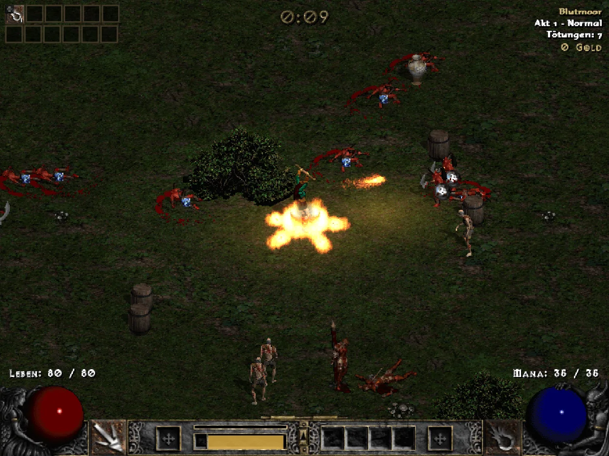
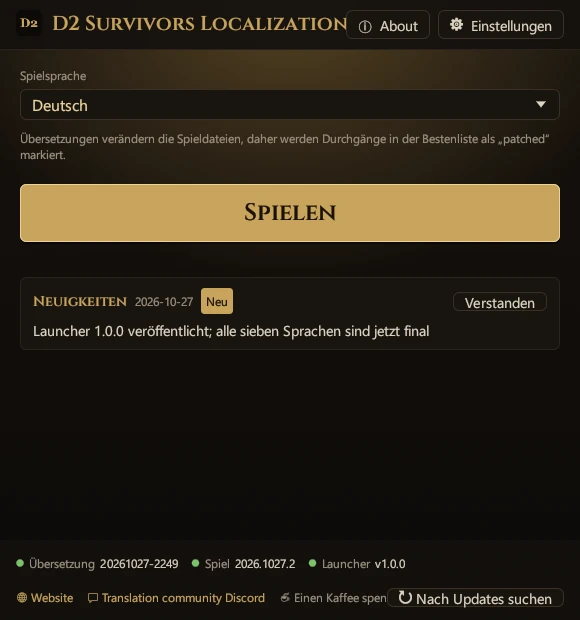
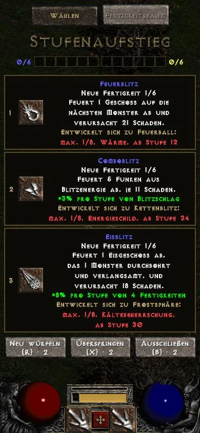

D2 Survivors
Von framara
Ein kostenloses, inoffizielles Fanspiel im Survivors-Stil in der Welt von Diablo II. Dieses Übersetzungsprojekt hat nichts mit dem Autor zu tun; Fehler im Spiel selbst bitte über die offiziellen Kanäle melden.
Inoffizielles Fanprojekt
Wähle deine Version
Spiele Diablo 2 Survivors in deiner Sprache. Dieses Fanprojekt übersetzt das Spiel selbst, keinen Guide: Oberfläche, Fertigkeiten, Gegenstände, Monster und Level-up-Karten auf Deutsch, mit den offiziellen Begriffen aus Diablo II: Resurrected. Der Launcher installiert, aktualisiert und stellt alles mit einem Klick wieder her.
Spiele Diablo 2 Survivors in deiner Sprache. Dieses Fanprojekt übersetzt das Spiel selbst, keinen Guide: Im Browser stellt ein Klick auf ein Lesezeichen das Spiel auf Chinesisch (traditionell), Chinesisch (vereinfacht), Japanisch, Deutsch, Französisch, Russisch oder Polnisch um – mit den offiziellen Begriffen aus Diablo II: Resurrected. Keine Installation, auf PC und Handy.









Spielszenen: D2 Survivors (framara), mit den eigenen Diablo-II-Dateien des Spielers
Dieses Projekt stellt nur Übersetzungen bereit und enthält keine Spieldateien. Hol dir vorher D2 Survivors und Diablo II aus den offiziellen Quellen unten.
Von framara
Ein kostenloses, inoffizielles Fanspiel im Survivors-Stil in der Welt von Diablo II. Dieses Übersetzungsprojekt hat nichts mit dem Autor zu tun; Fehler im Spiel selbst bitte über die offiziellen Kanäle melden.
Blizzard Entertainment
D2 Survivors liest Grafik und Sound aus dem Diablo II auf deinem Computer. Du brauchst also ein eigenes Diablo II: Resurrected oder Diablo II + Lord of Destruction (Patch 1.14).
Begriffe: Namen von Fertigkeiten, Gegenständen, Monstern und Gebieten folgen der offiziellen Übersetzung von Diablo II: Resurrected; alles andere übersetzt dieses Projekt.
Chinesisch (traditionell), Chinesisch (vereinfacht), Japanisch, Deutsch, Französisch, Russisch und Polnisch sind fertig und veröffentlicht.
Neuerungen bei Übersetzungen, Sprachen und Launcher. Launcher und Lesezeichen holen jedes Mal die neueste Übersetzung, ohne neuen Download.
Du änderst keine Spieldateien von Hand – das erledigt der Launcher. Schließe vorher das Spiel. Der Launcher zeigt alles in der Sprache an, die du auswählst.
Lade die Desktop-Version von der offiziellen D2-Survivors-Website, gib im Einrichtungsbildschirm deinen Diablo-II-Ordner an und prüfe, ob das Spiel startet.
Lade d2s-launcher.exe herunter und lege ihn in einen beliebigen Ordner. Keine Installation nötig.
Beim ersten Start siehst du alle Sprachen, jede in ihrer eigenen Schrift. Klicke auf deine Sprache und dann auf „→“ – Launcher und Spielübersetzung nutzen ab dann diese Sprache.
① „Spiel“: Der Launcher sucht D2 Survivors (standardmäßig in %LOCALAPPDATA%\Programs\D2 Survivors; liegt es woanders, nimm „Ordner wählen…“). ② „Diablo II“: Er sucht dein Diablo II: Resurrected oder klassisches Diablo II; wird nichts gefunden, kannst du „Überspringen“. ③ „Fertig“: Auf Wunsch „Desktopverknüpfung erstellen“, dann „Spielen“. Beim ersten Mal wird die Übersetzung geladen und die originale app.asar gesichert.
Standardmäßig holt jeder Start die neueste Übersetzung („Übersetzungen beim Start aktualisieren“ unter „Einstellungen“), und nach Spiel-Updates wird sie automatisch neu angewendet. Die Sprache wechselst du im Hauptfenster unter „Spielsprache“.
app.asar wieder da.%LOCALAPPDATA%\D2SurvivorsLauncher löschen.Für eine eigene Verknüpfung nimm diese Zeile als Ziel: Das Spiel startet direkt in der gewählten Sprache, ohne Launcher-Fenster. (Die Verknüpfung aus „Desktopverknüpfung erstellen“ öffnet das Fenster und startet das Spiel sofort.)
d2s-launcher.exe --launch --lang de--launch--play--lang <id>--no-update--update--restore--self-update--statusDu spielst im Browser auf d2survivors.lol? Ein Lesezeichen stellt das Spiel auf Chinesisch (traditionell), Chinesisch (vereinfacht), Japanisch, Deutsch, Französisch, Russisch oder Polnisch um, mit derselben Übersetzung wie der Launcher. Keine Installation, auf PC und Handy.
D2 Deutsch ← in die Lesezeichenleiste ziehen
javascript:import('https://cycleapple.github.io/d2survivors-localization/web/d2zh.js').then(m=>m.default()).catch(e=>alert('D2 Survivors Localization: '+e))Tippe oben auf „Lesezeichen-Code kopieren“.
Öffne diese Seite in Safari, tippe auf Teilen, wähle „Lesezeichen hinzufügen“ und sichere.
Neuere iOS-Versionen: Teilen steckt im „⋯“-Menü.
Öffne die Lesezeichen, tippe auf „Bearbeiten“ und dann auf das neue Lesezeichen.
Neuere iOS-Versionen: Die Lesezeichen stecken im „⋯“-Menü.
Nenne es „D2 Deutsch“, ersetze die ganze Adresse durch den Code und tippe auf „Fertig“.
Öffne d2survivors.lol/play/, starte das Spiel und tippe in den Lesezeichen auf „D2 Deutsch“.
Starte das Spiel vorher über USE MY OWN FILES oder HOSTED FILES.
Tippe oben auf „Lesezeichen-Code kopieren“.
Öffne diese Seite in Chrome, tippe auf ⋮ und dann oben auf ☆.
Tippe auf ⋮ → „Lesezeichen“, dann beim neuen Lesezeichen auf ⋮ → „Bearbeiten“.
Nenne es „D2 Deutsch“, ersetze die ganze URL durch den Code und speichere mit ←.
Gib im Spiel auf d2survivors.lol/play/ „D2 Deutsch“ in die Adressleiste ein und tippe auf den Vorschlag mit ☆.
Aus der Lesezeichenliste startet es nicht.
Die Bildschirme sind nur Skizzen; Beschriftung und Position der Tasten können je nach Systemversion leicht abweichen.
Nein. Es ist eine inoffizielle Fanübersetzung ohne Verbindung zu den Entwicklern von D2 Survivors oder zu Blizzard Entertainment.
Der Code schon. Der Quellcode von Launcher, Lesezeichen, Website und Werkzeugen liegt auf GitHub unter der MIT-Lizenz. Der Launcher wird von GitHub Actions automatisch aus diesem öffentlichen Quellcode gebaut (Build-Verlauf), und jedes Release enthält d2s-launcher.exe.sha256, damit du ihn selbst prüfen kannst.
Die Übersetzungsdaten (die Wörterbücher) stehen noch unter keiner offenen Lizenz; alle Rechte vorbehalten, siehe dict/LICENSE. Die darin verwendeten offiziellen Begriffe gehören Blizzard Entertainment.
Sie ist fertig: vollständig übersetzt und im Spiel auf Lücken geprüft. Danach wurden alle Oberflächentexte und 300 zufällig gewählte Einträge noch einmal unabhängig gegengelesen; daraus entstanden rund 400 Korrekturen im ganzen Wörterbuch. Namen magischer Gegenstände und besonderer Monster werden nach deutscher Grammatik zusammengesetzt, etwa „Robuste Kappe des Geistes“, und Heldinnen tragen weibliche Titel. Rund 70 % der Begriffe stammen direkt aus der offiziellen deutschen Übersetzung von Diablo II: Resurrected.
Wenn dir Fehler auffallen, sag uns bitte Bescheid.
Ja. Den Launcher gibt es bisher nur für Windows; auf Mac, Linux und Handy spielst du die Browser-Version und nimmst das Lesezeichen aus dem Reiter „Browser“.
Nein. Der Launcher ersetzt nur resources\app.asar im Spielordner und sichert vorher das Original. Spielstände liegen woanders und werden weder gelesen noch geändert.
Nein. Spielstände bleiben wie gewohnt im Browser. Das Lesezeichen tauscht nur den Text des Spiels in der geöffneten Seite aus und hinterlässt nichts; neu laden bringt das Original zurück.
Ein Update ersetzt app.asar, die Übersetzung ist dann weg, bis du das Spiel wieder über den Launcher oder die Verknüpfung startest – der wendet sie erneut an.
Hat sich die neue Version zu stark geändert, erzwingt der Launcher nichts: Er startet das Originalspiel und meldet, dass die Übersetzung angepasst wird. Ist sie fertig, wird sie beim nächsten Start automatisch wieder angewendet – du musst nichts tun.
Das Lesezeichen prüft jedes Mal, ob seine Regeln zur neuen Version passen. Wenn nicht, meldet es, dass die Übersetzung ein Update braucht, und startet nicht; das Originalspiel bleibt unberührt. Spiel bis zum Update hier auf Englisch.
Die Übersetzung nutzt den eingebauten Koreanisch-Platz des Spiels. Danach zeigt das Menü dort den Namen der gewählten Sprache. Für Koreanisch wähle im Launcher „한국어 (원본)“.
Android Chrome führt Lesezeichen aus der Lesezeichenliste nicht aus: Tippe den Namen „D2 Deutsch“ in die Adressleiste und dann das darunter erscheinende Lesezeichen. Auf dem iPhone öffnest du auf der Spielseite die Safari-Lesezeichen und tippst es dort an.
Prüfe außerdem, ob die ganze Adresse des Lesezeichens durch den Code ersetzt wurde und mit javascript: beginnt.
Nein. Vom Home-Bildschirm aus öffnet sich das Spiel im Vollbild, ohne Adressleiste und ohne Lesezeichen, und die Übersetzung bleibt nicht erhalten: Nach dem Neuladen oder erneuten Öffnen ist wieder das Original da. Spiel deshalb in einem Safari- oder Chrome-Tab und tippe nach jedem Öffnen oder Neuladen erneut auf das Lesezeichen.
Alle Texte im Spiel sind übersetzt und im Spiel auf Lücken geprüft. Siehst du Englisch, hat meist ein Spiel-Update neue Texte gebracht; die Übersetzung reicht sie mit einem der nächsten Updates nach, und der Launcher lädt sie automatisch. Bleibt etwas auf Englisch, sag uns bitte Bescheid.
Alle Texte im Spiel sind übersetzt und im Spiel auf Lücken geprüft. Siehst du Englisch, hat meist ein Spiel-Update neue Texte gebracht; die Übersetzung reicht sie mit einem der nächsten Updates nach, und das Lesezeichen lädt jedes Mal die neueste Übersetzung. Bleibt etwas auf Englisch, sag uns bitte Bescheid.
Der Launcher ist nicht signiert (ein Zertifikat kostet jedes Jahr Geld), daher warnt Windows SmartScreen, bis ihn genug Leute heruntergeladen haben.
Signiert ist er nicht, aber Quellcode und Build-Prozess des Launchers sind öffentlich.
Klicke auf „Weitere Informationen“ und dann auf „Trotzdem ausführen“; danach fragt Windows nicht mehr. Lade ihn nur von dieser Website oder von GitHub Releases. Jedes Release enthält d2s-launcher.exe.sha256, prüfbar mit certutil -hashfile d2s-launcher.exe SHA256.
Meldet der Browser, dass die Datei selten heruntergeladen wird, wähle im Menü des Downloads „Beibehalten“.
Leider nein. Das Spiel selbst erlaubt in Charakternamen nur englische Buchstaben (ohne ä, ö, ü, ß) und Koreanisch.
Tippfehler, fehlende Übersetzungen und Probleme mit Lesezeichen oder Launcher bitte im Discord der Übersetzungs-Community melden; dort gibt es auch Neuigkeiten.
Übersetzungs- und Programmfehler kannst du auch über GitHub Issues melden.
Probleme mit dem Spiel selbst (nicht durch die Übersetzung) bitte im offiziellen Discord von D2 Survivors (Englisch) melden.
Sehr gern! Alle Sprachen sind fertig veröffentlicht, aber eine Übersetzung kann immer besser werden. Wenn dir holprige Formulierungen oder Tippfehler auffallen, gerade in deiner Muttersprache, sag uns Bescheid. Schreib uns hier.